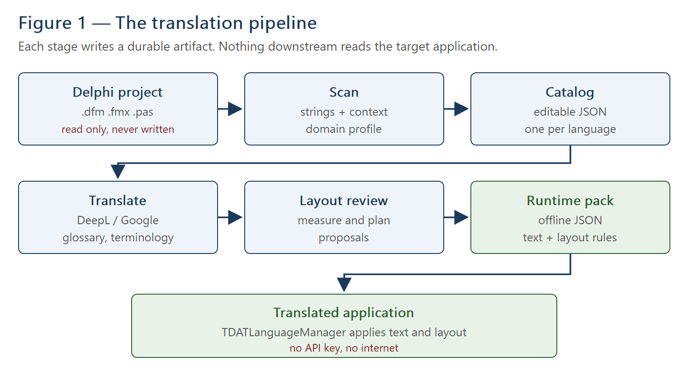
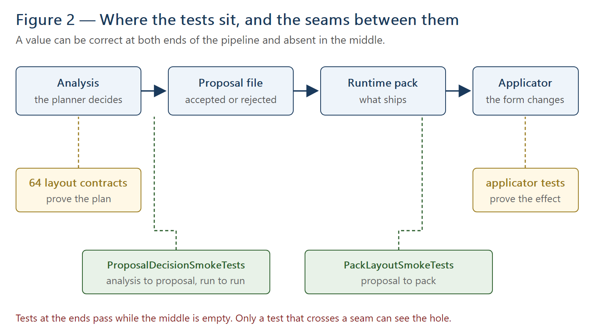

Delphi App Translation Studio
Engineering Guide
How the product is built, why it is built that way,
and what holds it together
Last changed: 20 August 2026
Applies to: alpha, build 2026.08.18.128
Frameworks: Delphi VCL and FireMonkey · Platform: Windows (Studio)
Written from the source. Every number, file name and line reference in this
document was taken from the code as it stands on the date above.
Headings use the built-in Heading 1–3 styles, so a live page-numbered table of contents can be inserted over this list at any time through References > Table of Contents.
Appendix A — Unit inventory
Appendix B — Contract inventory and framework parity
Appendix C — Files, folders and where things live
This guide is for the engineer who has to change this product: to fix a defect, add a capability, or judge whether a proposed change is safe. It assumes fluency in Delphi and no prior knowledge of this codebase.
It is not a user guide. It does not explain how to run the Setup Wizard; it explains what the Wizard is doing and why.
Where a design decision was reached by measurement rather than by reasoning, the measurement is given. Where something is known to be wrong, it is said so plainly and pointed at the Fix List rather than glossed over. A guide that only describes the parts that work is not an engineering document.
Delphi App Translation Studio takes a Delphi application and produces the files needed to run that application in another language — including the layout adjustments the new language requires, because translated text is rarely the same size as the original.
Concretely, it:
The deployed application needs no API key and no internet connection.
Almost every design decision in this codebase follows from one of five commitments. When a change seems to conflict with the surrounding code, it is usually because it conflicts with one of these.
The translator reads the target project's .dfm, .fmx,
.pas, .dpr and .dproj files and never writes to
them. Every artefact it produces lives outside the target tree. This is not a
configuration option; it is the reason a developer can trust the tool with a working
application.
It has a consequence that recurs throughout this guide: where a translation genuinely
requires a change to the application — a TranslateText call for a string the
application composes itself — the tool's job is to say so precisely, not to make
the change.
Translation happens once, at development time. What ships is a JSON pack read from disk. No key, no network, no telemetry. This separates the one phase that needs the internet from the one that must never depend on it.
The catalog, the layout proposal and the runtime pack are JSON. They can be read in a text editor, compared between versions, committed to source control and corrected by hand. Several defects described in this guide were diagnosed by reading those files rather than by debugging, which is an argument for the format on its own.
Learned the hard way. The list of layout properties a pack may carry once existed in four units. They drifted, and each drift silently deleted a feature: the planner decided correctly, the runtime would have applied correctly, and the pack in between simply did not carry the value. There was no error anywhere.
That list now lives only in DAT.Runtime.LanguagePack, which the exporter
and both applicators already share. Section 14 explains the tests that now guard
the joins.
VCL and FireMonkey differ in defaults, in property names and in what the framework does for you. The response is not two code paths but one implementation behind a seam. The clearest example is text measurement (section 10.1); the clearest payoff is right-to-left mirroring (section 11), where the VCL has native support, FireMonkey has none at all, and both are served by the same pass.

Each stage writes a durable artefact and the next stage reads it. That is what makes the pipeline diagnosable: when something is wrong on screen, the question is always which artefact first contains the mistake, and every one of them can be opened and read.
| Folder | Units | Lines | Responsibility |
|---|---|---|---|
source\core | 10 | 3,497 | Catalog types, JSON, workspace paths, glossary, hyphenation, pack builder |
source\scan | 10 | 3,741 | Reading forms and Pascal; context and domain profiling |
source\review | 5 | 4,720 | The layout planner, text measurement seam, code-owned geometry |
source\provider | 8 | 1,371 | DeepL and Google: placeholders, batching, language codes, retry, credentials |
source\runtime | 5 | 4,452 | What ships inside the customer's application |
source\components | 7 | 2,064 | TDATLanguageManager and the language selectors |
source\studio | 4 | 5,204 | The Studio and the Setup Wizard |
source\integration | 5 | 2,172 | Component kits, packages, deployment |
source\validation | 1 | 403 | The catalog validator |
The division that matters most is runtime versus everything else. Units under
source\runtime and source\components are compiled into the
customer's application. They must be small, must not reach for the network, and must
never write to a user's disk uninvited. Everything else runs only in the Studio.
DAT.Scan.Project drives the scan; DAT.Scan.FormText reads
designer files and DAT.Scan.PascalResources reads Pascal.
The scan is limited to project-referenced source units and designer resources. Broad
harvesting of Items.Add, Lines.Add, TextOut and
similar calls is disabled on purpose: in practice those carry data rows, file
names, log lines and generated content rather than stable interface text. An earlier
version harvested them and produced thousands of non-UI strings from one application.
Designer-authored Items and Lines are still covered, because
those come from the form file where they belong.
Grid columns are the awkward case and are worth understanding before changing the
parser. A TDBGrid keeps its heading on the column's Title, so
the catalog key is grdSchedule.Columns[0].Title.Caption — one level further
in than the column itself. Collections nest, so a collection's end must not
pop the object stack; getting that wrong corrupts every control after the grid.
Every string is classified by who controls it at run time. The classification decides what happens later and is worth stating exactly:
| Classification | Meaning | Applied automatically? |
|---|---|---|
| designerAutomatic | Set in the form file and not touched by code | Yes |
| runtimeWired | Assigned in code, but through a path the runtime can reach | Yes |
| runtimeUnwired | Assigned in code, composed at run time | No — needs a call in the application |
| applicationData | A data value, not interface text | No |
| suspicious | Looks like data, or like something that should not be translated | No |
The third row is the one that surprises people. Carillon builds its status bar in
code — StatusBar1.Panels[1].Text := 'Songs in Playlist: ' +
PlaylistCount.ToString; — so anything the pack writes there is overwritten moments
later. The classification is correct and the translation is genuinely impossible without
a TranslateText call in the application. What the product does not yet
do is tell the developer which strings those are and where they live, though it holds the
file and line for each. That is on the Fix List.
A translation service sees one string at a time. Given Play Date From and told only that it is "text used in a desktop application", DeepL returned Spielverabredungen — an afternoon arranged between children — for a column of bell timings. Given Close, Spanish returned cerca, meaning nearby.
Everything needed to settle both was already in the scan. Nobody had to type it.
DAT.Scan.DomainProfile reads the application rather than recognising it.
An earlier version matched six subjects from keyword lists — music, scheduling, business
records, clinical records, email, backups. It read one application correctly and would
have failed file utilities, database tools, point of sale, laboratory systems and most of
the long tail Delphi is actually used for. A recogniser can only recognise what somebody
already thought of.
Two things come out of reading an application:
Volume is loudness in an application that says mute and speaker; a disk in one that says partition and format. Mask is a filename pattern where the application talks about filenames. Nothing has to know what kind of application it is looking at.
Where the application settles nothing, nothing is said. A guess between two senses is worse than silence: it is a confident instruction to be wrong.
A button says what pressing it will do, so its caption is an instruction. A menu item names a thing. English hides the difference because its imperative and its dictionary form are the same word — so a service given Help alone may reasonably return a statement, and Arabic did: the third person singular, for Help, Close and Play alike. Grammatical, and useless on a button.
The context now states which is wanted, chosen from the control class, which every string already carries.
This was right and was being wasted. A service takes one context per
request, and the client batched fifty strings and concatenated all fifty of their
contexts into that single field — so Help arrived wearing forty-nine descriptions
of other controls.
The economics make the fix free. Billing is per translated character, not per request, and DeepL does not count context characters at all. Measured on one application:
| Characters | |
|---|---|
| Source text (billed) | 6,471 |
| Context (not billed) | 65,466 |
The application costs 6,471 characters whether it goes as six requests or as 297.
DAT.Provider.Batching therefore groups strings by identical context:
where a context is unique the group holds one string; where many share a context, or have
none, they travel together as before. The cost is round trips — a minute or two, once per
language, for a result that is then stored.
The catalog (DAT.Core.CatalogJson) is the editable record of one
application in one language, held under
%LOCALAPPDATA%\DelphiAppTranslationStudio\Workspaces\<project>\Development.
Each entry carries the source text, the translation, where it came from, its
classification, its context description and its status.
DAT.Validation.Catalog refuses to let a pack be built from a catalog with
errors. It is not decoration. When the first Arabic run stopped with two blocking errors,
those errors were real: the provider had turned every % into a
0, so %.2f GB used came back as 0.2f. Shipping that
would have printed nonsense at users for ever. The validator is frequently the only thing
standing between a plausible-looking translation and a broken application.
Two services are supported, both using the developer's own key: DeepL and Google Cloud Translation. The key is held in Windows Credential Manager or session-only, and never written to the catalog, the pack or any log.
Four units exist because four separate things went wrong in production. Each is worth knowing about before changing that code.
DAT.Provider.Placeholders)Format specifiers are lifted out before a request and replaced by a token
(ZQPH0ZQPH) that carries its own index, so a token the engine moves still
returns as the specifier it stood for — right-to-left languages move things. Identical
specifiers get separate tokens, because one string had three %.2f in it and
a search-and-replace cannot tell them apart.
Afterwards the specifiers are restored and checked. If they still do not match, the source text is returned rather than the translation: an English string among Arabic ones is visible in review, whereas a broken format string is invisible until a customer sees it.
A string that is nothing but specifiers is never sent. %.2d/%.2d is
a date, not a sentence.
DAT.Provider.LanguageCodes)A catalog names languages the way Windows does — ar-SA,
es-ES. DeepL accepts two-letter codes plus a published list of variants
(EN-GB, EN-US, PT-BR, PT-PT,
ZH-HANS, ZH-HANT, ES-419, DE-DE,
DE-CH, FR-CA, FR-FR) and rejects everything else
with HTTP 400.
The earlier normaliser passed the region through unchanged, so German worked by luck —
DE-DE happens to be on that list — and Arabic, Spanish and Hebrew could never
have worked. A region is now kept only where the service is known to accept it and
dropped everywhere else. Dropping is the safe direction: the general code works for
every language DeepL supports, so a language added after this was written still
translates.
DAT.Provider.Retry)A 429 is not a failure; it is the service asking for a slower pace, and the only wrong
answer is to stop. Six attempts, waiting one second, two, four, eight, sixteen —
thirty-one seconds of patience against the nine hundred milliseconds it used to allow.
Retry-After is obeyed to the second where sent, capped, and treated as absent
rather than guessed at when it is a date form or a zero.
A 400, 403 or 456 is not retried: a malformed request, a refused key and an exhausted quota all come back just as fast.
The client also paces itself. The delay starts at zero, grows by a quarter second each time a 429 is met and holds for the rest of the run — so a run that is never refused pays nothing, and one that is refused once slows down instead of arguing.
Refusals used to read "Check the key, plan, billing, quota, language codes, and network connection" — six possibilities, one of them right, and no way to tell which. Both services return an explanation in the body and it was being discarded. Rejections now quote it and add one line where the status code carries meaning of its own.
Three shared, editable stores live under
C:\Users\Public\Documents\Delphi App Translation. All three are plain JSON
and are meant to be corrected by hand.
| Store | Scope | Purpose |
|---|---|---|
Dictionaries\<lang>.json | Per language | Approved wording earned on one application, available to every later one |
Terms\ambiguous-terms.json | One, English | Words ambiguous in a UI, with the evidence that settles each sense |
Hyphenation\<lang>.json | Per language | Where a long word may be broken |
German builds one word where English uses three, and a single word cannot wrap: there is no space in Benachrichtigungseinstellungen for a column heading to break at, so it is simply cut off. Adding a language installs a companion dictionary saying which letters are vowels, which consonant groups are one sound, and how much of a word must be left whole at each end.
The pack carries a soft hyphen (U+00AD) at every allowed break, because nothing at build time knows how wide a control will end up. Captions only — format strings are left exactly as written, since their text goes on to be filled with data.
The two frameworks then differ, and this was measured rather than assumed:
DrawText will not break a line at one. The same word measured 205px marked
against 170px plain, and stayed on one line.So DAT.Runtime.VCL resolves the marks itself, after every layout rule has
been applied and each control is the size it will really be: a control that wraps gets a
real hyphen and a real line break at the last mark that fits; one that cannot wrap gets
the plain word with the marks removed. No soft hyphen ever reaches a VCL caption.
DAT.Review.Localization is the largest and most consequential unit in the
product. It decides what has to change so that translated text fits.
Text is measured with the engine that will actually draw it:
GetTextExtentPoint32 through DAT.Review.TextMeasurement.GDI for
the VCL, TTextLayout through
DAT.Review.TextMeasurement.FMX for FireMonkey, chosen by
DAT.Review.TextMeasurement from the catalog's framework. DPI is pinned to 96
because that is the basis a form was designed at.
Measuring with the wrong engine produces a plan that is confidently wrong — it fails correct layouts and passes incorrect ones — which is why this seam exists rather than one "good enough" measurement.
Each of these produced wrong layouts before it was understood:
TLabel.AutoSize defaults to True and WordWrap to
False — the opposite of an FMX label. A translated caption therefore stretches a VCL label
before any rule is applied, so AutoSize must be cleared before the
text is assigned, not after..dfm records fonts as Font.Height in negative pixels, not
Font.Size in points. The conversion is
Round(-Height * 72 / 96), matching what TFont itself does, and
fonts inherit down the object tree. Assuming twelve points where the form said nine
overstated every caption by a third.Name_1. Looking up the instance
name rather than the form's identity left every duplicate dialog untranslated.The planner runs a sequence of passes over a single resolved model, so the values it finally exports agree with one another rather than describing conflicting placements:
Every step in the settling pass is trial and revert: a change that breaks a contract is undone rather than kept.
A late and important addition. DAT.Review.CodeGeometry reads the Pascal
unit beside each form and notes any control whose Left, Top,
Width, Height, Position.X,
Position.Y, Align or SetBounds is assigned there.
Those controls have their text translated and their geometry left entirely alone.
The case that produced it: an application centres its main heading in code at start-up,
lblMainHeader.Left := (Screen.Width - lblMainHeader.Width) div 2;. The planner
knew nothing of that, read the designer geometry, and proposed numbers that held the
caption's own centre exactly — and overwrote a decision the application had already made
and would never make again. Returning to English restored the designed position
rather than the computed one.
The detection is deliberately literal: an assignment to a named identifier's geometry property and nothing cleverer. A control it misses behaves as before; a control it claims wrongly loses only its layout adjustments and is still translated. Both directions fail softly, which is the right property for a heuristic that reads somebody else's source.
One reading serves both frameworks, because what is read is Pascal rather than VCL or FireMonkey.
Arabic, Hebrew, Farsi and Urdu were offered by the Wizard and marked rtl
in the catalog long before anything read that value. A user could pick Arabic, get a clean
run, and receive an application with Arabic text laid out left to right — worse than
refusing, because it looks like it worked.
A right-to-left interface is a reflected interface, not reversed text.
Two experiments settled the design before any code was written.
| BiDiMode | Flips alignment | RTL reading | Left scroll bar |
|---|---|---|---|
bdRightToLeft | yes | yes | yes |
bdRightToLeftNoAlign | no | yes | yes |
bdRightToLeftReadingOnly | no | yes | no |
A label set taLeftJustify draws as DT_RIGHT under
bdRightToLeft. Since the planner already decides alignment for every control,
that flip would land on top of ours and undo it silently.
bdRightToLeftNoAlign is therefore what the runtime uses.
The second experiment: digits look after themselves. A Hebrew word followed by
2026 comes out with the letters reversed and the year intact, in both
renderers. Version strings, times and quantities need no help.
The VCL has BiDiMode and FlipChildren. FireMonkey has neither.
Leaning on the VCL's mechanism would mean writing the FireMonkey half separately and
getting different behaviour on each, so the mirror is computed by the planner and emitted
as the ordinary position rules the runtime already applies. The transform is
parent-relative, which handles nesting without recursion:
MirroredLeft := ParentInnerWidth - (PlannedLeft + PlannedWidth)
A form is never mirrored. A window has no parent to be reflected within, so the
arithmetic degenerates into negating its own position — which put three forms of one
application at a negative Left and showed a strip of desktop down one side.
| Mirrors | Does not |
|---|---|
Coordinates, within each parentAlign, for framework-placed controlsAnchors, where one horizontal edge is anchoredText alignment (centre stays centre) Grid column order Tab order Reading order and scroll-bar side (VCL) |
Transport buttons — rewind, play and stop refer to tape
direction, not reading direction, so the group moves as a block and keeps its
order Numbers, times, versions and paths — handled by the renderers Images — the transform only ever moves a control, never its contents, so logos are safe by construction |
Reading order is applied before the text, and the reason is subtle enough to
document. Translating a menu item's caption rebuilds the menu, and Delphi stamps each item
with the reading order in force at the moment of the rebuild. Applying direction after the
text meant rebuilding the menu in the language being left, then relying on
TMenu.DoBiDiModeChanged to correct it — which returns early on several
conditions, including a window handle that is momentarily zero while the form's window is
recreated. Menus stayed reversed until the application was restarted.
Setting direction first removes the dependency entirely: whatever is rebuilt afterwards is rebuilt the right way round to begin with.
Worth knowing when reproducing menu behaviour: TMenu.DoBiDiModeChanged
begins if (not SysLocale.MiddleEast) or (WindowHandle = 0) then Exit. On a
machine whose Windows locale is not Middle-Eastern, the VCL does not lay menus out
right-to-left at all, whatever BiDiMode says.
DAT.Core.RuntimePack writes schema 3: language and locale, the
translated strings by key, source-text fallbacks, runtime templates, font colours, and the
layout rules. It is the only artefact that ships.
Two rules govern what may go in:
IsRuntimeLayoutProperty in DAT.Runtime.LanguagePack.Both rules once had private copies elsewhere and both silently deleted features. The
pending case is the more instructive: RestoreDecisions reads the previous
run's proposal file and copies each saved decision over the analyser's, so that a
rejection survives a re-scan. But it also copied pending, and pending is not a
decision — it is the absence of one. A proposal file written by a build that did not know
a property existed recorded it as pending, and every later run restored that over a
freshly accepted decision. The feature was vetoed in perpetuity by a stale file, and no
amount of rebuilding the analyser could have fixed it.
DAT.Runtime.VCL and DAT.Runtime.FMX apply a pack to a live
form. DAT.Components.Core holds the shared language manager; the VCL and FMX
adapters differ only where the frameworks do.
ApplyToFormAutoSize, FontSize,
WordWrap, alignment, Align, size, position,
Anchors, TabOrder, column widths, column order.The ordering is not arbitrary. An auto-sizing label recomputes its own bounds from one
line of text and discards an assigned width, so AutoSize must be cleared
first. Column widths name a column by its designed index, so the column order must
be reversed last or every width lands on the wrong column.
Colour. The applicator does not set colours, so putting one back can only undo what the application itself did. One application paints its own colours from a menu after the form is up; restoring the design-time colour stamped a maroon heading over a white one and turned captions black. What we never changed, we never restore.
This section describes the practice that most distinguishes this codebase. It is worth reading even by someone who intends to change nothing.
A layout contract is three files: a small purpose-built form, a catalog naming the translated text for it, and an expectation file stating in numbers what the analyser must do. Assertions are numeric because layout is numeric — a right edge that must not move, a control that must keep its place, a caption that must still hold its text.
The forms are purpose-built rather than taken from a real application, so each rule is proved on the shape of a problem rather than on one customer's project.
54 layout contracts currently run, alongside 3 form-scan fixtures, 9 pascal-scan checks and 28 test harnesses.
The single most important rule. A contract whose expected values are copied from what the code currently does proves nothing — it records behaviour instead of requiring it.
Two contracts in this project had to be rebuilt for exactly that fault: one flipped a constant the fixture never reached, and another used a caption that lacked the hard line breaks the real one had. Both passed. Both were worthless.
The discipline is therefore: write the assertion, watch it fail for the right reason, then make it pass. Where a test was written after the code — which happens — it is verified by deliberately disabling the code and confirming the test fails. This guide's author did that twice in one day.

The hardest defects this product has had all shared one shape: a value correct at both ends of the pipeline and absent in the middle.
Three separate failures deleted the right-to-left feature before anyone noticed:
RestoreDecisions made that permanent.Every one was invisible to every test that existed, because the tests sat at the ends: the layout contracts passed because the plan was right, and the applicator tests passed because they were handed a pack written by hand. Nothing crossed the joins.
Three tests now do: PackLayoutSmokeTests goes proposal-to-pack, the
contract harness can assert a proposal's decision as well as its value, and
ProposalDecisionSmokeTests goes run-to-run. The first failed on seven of
eight checks when written.
A field diagnostic added to the VCL runtime read TMenu.Handle to report
the native right-to-left flag. TMenu.Handle creates and populates the menu if
it does not exist — and doing that mid-apply destroyed the translated menu
captions. The VCL runtime smoke test failed within seconds of the diagnostic being
switched on, which is exactly what that test is for. The diagnostic was changed to ask
Windows for the menu already on the window, which creates nothing.
tools\check_source_encoding.ps1 fails the build
if any .pas, .dpr or .dpk holds a character outside
ASCII without a byte order mark — because Delphi reads such a file in the ANSI codepage
and its text arrives wrong. It has caught two real defects that would otherwise have
shipped, including the German and Spanish vowel sets in the hyphenation dictionaries.The 54 contracts cover 33 distinct behaviours: 21 proven on both frameworks,
12 on VCL only, none on FireMonkey only. Ten of the twelve are framework-neutral
planner behaviour that simply has no FireMonkey fixture yet; one
(inherited_font_is_the_forms_font) is genuinely VCL-specific by design, and
one is partly so.
Because the planner measures through a seam, the same rule can legitimately produce different numbers on each framework — which is the argument for a twin rather than an assumption. Appendix B lists them. They must be written one at a time, each failing first; producing them in bulk from current output would recreate precisely the fault described in 14.2.
All four configurations — Win32 and Win64, Debug and Release — are rebuilt after every
change. tools\tests\RunPhase10ReleaseValidation.ps1 requires one
uninterrupted pass of the complete matrix, plus the Studio launch and self-localization
smoke tests.
The full suite: 54 layout contracts, 3 form-scan fixtures, 9 pascal-scan checks, the foundation, scanner, catalog, runtime, validation and export tests, the VCL and FMX runtime smoke tests, the four language-manager suites, and the focused harnesses for retry, language codes, context batching, proposal decisions, pack export, placeholders, hyphenation, context, wrap, discovery, and right-to-left on both frameworks.
Runtime packages must be rebuilt separately when a runtime unit changes; an application that links them will not otherwise pick the change up. This has cost real debugging time and is easy to forget.
Recorded properly in docs\guides\Fix List.md. The ones an engineer should
know before planning work:
| Unit | Purpose |
|---|---|
| core | |
| DAT.Core.Types | Catalog, entry, locale and enumeration types |
| DAT.Core.CatalogJson | Catalog read and write |
| DAT.Core.RuntimePack | Builds the shipped pack |
| DAT.Core.Glossary | Per-project approved terms |
| DAT.Core.SharedDictionary | Per-language wording shared across applications |
| DAT.Core.Hyphenation | Per-language break dictionaries |
| DAT.Core.Terminology | Authoritative term resolution |
| DAT.Core.TranslationWorkspace | Where every artefact lives |
| DAT.Core.ProjectDetection | Recognising a Delphi project and its framework |
| DAT.Core.AITranslation | The copy-and-paste AI workflow |
| scan | |
| DAT.Scan.Project | Drives the scan |
| DAT.Scan.FormText | Reads .dfm and .fmx |
| DAT.Scan.PascalResources | Reads .pas |
| DAT.Scan.Context | Writes each string's context sentence |
| DAT.Scan.DomainProfile | Vocabulary and word-sense resolution |
| DAT.Scan.Rules / Quality / TextCodec / Types / CatalogMerge | Classification, quality checks, encoding, types, merge |
| review | |
| DAT.Review.Localization | The layout planner |
| DAT.Review.TextMeasurement | The measurement seam |
| DAT.Review.TextMeasurement.GDI / .FMX | Per-framework measurement |
| DAT.Review.CodeGeometry | Controls the application positions itself |
| provider | |
| DAT.Provider.Client | DeepL and Google |
| DAT.Provider.Placeholders | Format specifier protection |
| DAT.Provider.Batching | Grouping by shared context |
| DAT.Provider.LanguageCodes | Codes a service will accept |
| DAT.Provider.Retry | Rate limits and backoff |
| DAT.Provider.CredentialStore / Settings / Types | Keys, settings, provider types |
| runtime (ships in the customer's application) | |
| DAT.Runtime.LanguagePack | Pack loading; the one allowed-property list |
| DAT.Runtime.VCL / .FMX | Applying a pack to a live form |
| DAT.Runtime.Manager | Language selection and format settings |
| DAT.Runtime.Preference | Remembering the chosen language |
| components (ship in the customer's application) | |
| DAT.Components.Core | Shared language-manager behaviour |
| DAT.Components.VCL / .FMX | Framework adapters |
| DAT.Components.VCL/FMX.LanguageSelector | Optional bound selector |
21 behaviours proven on both frameworks: button above grid padding; button keeps its place when text grows; button row keeps even pitch; caption above field takes its column; centred heading widens about centre; checkbox caption inside container; checkbox caption note; code-positioned control is left alone; container keeps its size; designed overlap is left alone; email label button padding; frame grows and says so; grid headers fit; intro paragraph wraps compact; left caption takes left margin; long button and field stack; media button row container; memo label pair; preserve label font; right-aligned caption grows leftward; right-to-left mirrors the form.
Twelve awaiting a FireMonkey twin: a button gets room for its caption; a caption
stops at the button beside it; a grid does not end the form; a heading widens before it
wraps; a long word gets room; a paragraph stays on the form; caption far wider than its
box; stacked paragraphs share a size; transport buttons keep their order; wrapped text is
balanced; right-to-left flips alignment and anchors (partly VCL-specific —
Anchors is a VCL notion); inherited font is the form's font (genuinely
VCL-specific — font inheritance was changed for the VCL only, and FireMonkey's differing
defaults were deliberately left alone).
| What | Where |
|---|---|
| Development catalog | %LOCALAPPDATA%\DelphiAppTranslationStudio\Workspaces\<project>\Development |
| Runtime packs | …\Workspaces\<project>\Languages, deployed to Localization\Languages beside the executable |
| Layout proposal and review | export\localization-review\<project>\<language> |
| Shared dictionaries, terms, hyphenation | C:\Users\Public\Documents\Delphi App Translation |
| Language preference (target app) | %LOCALAPPDATA% |
| Contracts | contracts\layout |
| Test harnesses | tools\tests |
| Engineering notes and Fix List | docs\guides |
This guide describes the product as it stood on 20 August 2026. Where it disagrees with
the code, the code is right and this document is stale — the Engineering Notes in
docs\guides\Engineering Notes.md carry the running record of change.